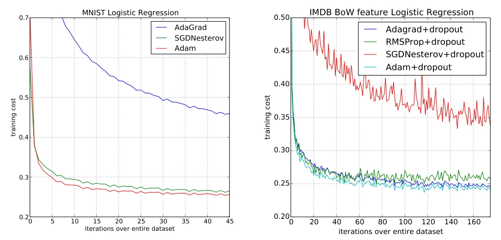
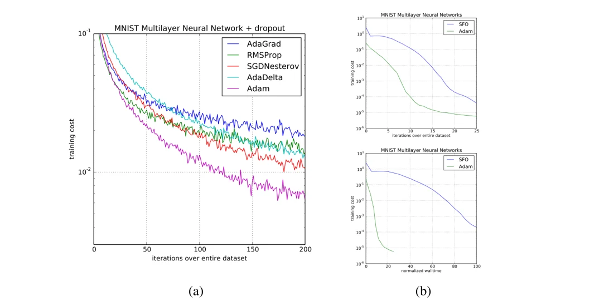
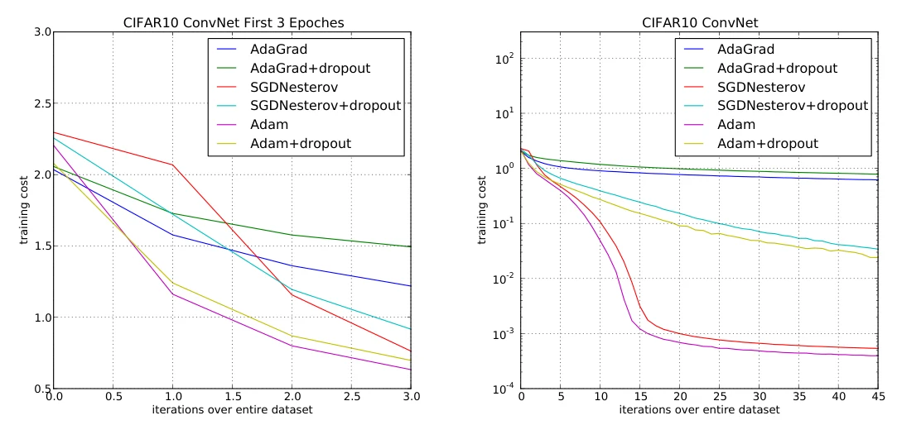
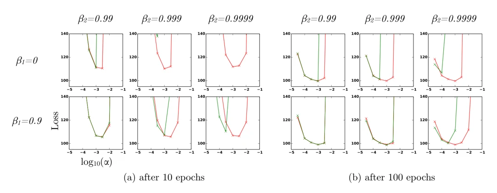

수업에서 본 경사 하강법, 걸음 폭이 문제
lec4-1 25쪽(Gradient Descent and Newton-Raphson)에 나온 식이에요.
| 방법 | 걸음 폭 | 문제 |
|---|---|---|
| 경사 하강법 | α 하나를 모든 매개변수가 같이 씀 | 기울기가 큰 매개변수와 작은 매개변수를 한 α로 맞출 수 없어요. 미니배치마다 기울기가 흔들려요. |
| Newton-Raphson | 헤세 행렬의 역행렬 \(H_f^{-1}\) | 매개변수가 n개면 n×n 행렬이에요. 수백만 개면 계산할 수 없어요. |
논문의 질문: 기울기만 가지고 매개변수마다 걸음 폭을 맞출 수 없을까?
평균 ÷ 크기 = 얼마나 확신하는가
1차 모멘트
2차 모멘트
이 비율에 α를 곱한 값이 실제로 움직이는 양이에요. 방향이 확실하면 크게, 불확실하면 작게 움직여요.
이름도 여기서 나왔어요. Adaptive Moment estimation, 기울기의 모멘트를 추정해서 걸음을 맞춘다는 뜻이에요.
2.1절
Algorithm 1, 다섯 줄
| # | 식 | 뜻 |
|---|---|---|
| 1 | \(g_t=\nabla_\theta f_t(\theta_{t-1})\) | 이번 미니배치에서 기울기를 구해요 |
| 2 | \(m_t=\beta_1 m_{t-1}+(1-\beta_1)\,g_t\) | 기울기의 평균을 이어서 갱신해요 (지수이동평균) |
| 3 | \(v_t=\beta_2 v_{t-1}+(1-\beta_2)\,g_t^2\) | 기울기 제곱의 평균을 이어서 갱신해요 |
| 4 | \(\hat m_t=\dfrac{m_t}{1-\beta_1^t},\ \hat v_t=\dfrac{v_t}{1-\beta_2^t}\) | 0에서 시작해 작게 나온 값을 바로잡아요 (편향 보정) |
| 5 | \(\theta_t=\theta_{t-1}-\alpha\,\dfrac{\hat m_t}{\sqrt{\hat v_t}+\epsilon}\) | 비율만큼 움직여요 |
논문이 제시한 기본값이에요. 모든 계산은 원소별로 해서, 매개변수마다 자기만의 m, v, 걸음 폭을 가져요. 더 저장하는 건 m과 v 두 벡터뿐이에요.
같은 α, 다른 걸음
| 최근 기울기 | m̂ (평균) | √v̂ (크기) | 비율 | 결과 |
|---|---|---|---|---|
| +2, +2, +2, … | 2 | 2 | 1 | α만큼 성큼 |
| +2, −2, +2, −2, … | ≈ 0.1 | 2 | ≈ 0.05 | 거의 제자리 |
| +0.002, +0.002, … | 0.002 | 0.002 | 1 | 작은 기울기도 α만큼 |
기울기를 직접 바꿔 보세요. 세로축은 한 걸음 크기를 α 단위로 잰 값이에요(β 기본값, 100걸음).
“아주 작게 일정”을 눌러도 그래프가 “방향 일정”과 똑같아요. 기울기에 c를 곱하면 m̂은 c배, √v̂도 c배라서 비율이 그대로이기 때문이에요.
비율 하나에서 네 가지가 나와요
한 걸음은 대략 α를 넘지 않아요
비율이 보통 ±1 안쪽이라 \(|\Delta_t|\lessapprox\alpha\)예요. 논문은 α를 “여기까지는 믿고 가도 되는 범위(trust region)”로 봐요. 그래서 α를 미리 정하기 쉬워요. 2.1절
최적점 근처에서 저절로 느려져요
최적점에 가까워지면 기울기 방향이 흔들려 비율이 0에 가까워져요. 논문은 이걸 “자동 담금질(automatic annealing)”이라고 불러요. 2.1절
기울기 크기에 상관없어요
\((c\,\hat m_t)/\sqrt{c^2\,\hat v_t}=\hat m_t/\sqrt{\hat v_t}\). 층마다 기울기 크기가 크게 달라도 같은 α로 돼요. 2.1절
편향 보정이 첫 걸음을 지켜요
m과 v가 0에서 시작해서 처음엔 둘 다 작게 나와요. 기울기 2로 첫 걸음을 하면 \(m_1=0.2\), \(v_1=0.004\)라서 보정이 없으면 비율이 3.16이에요. 기울기가 계속 2면 12번째 걸음에서 α의 6.57배까지 커져요. 보정하면 처음부터 1이에요. 3절 · 위 그래프 주황 선
AdaGrad와 RMSProp의 장점을 합쳤어요
| 방법 | 방향 기억 (1차) | 매개변수별 걸음 (2차) | 편향 보정 | 논문이 말한 특징 |
|---|---|---|---|---|
| SGD | – | – | – | α 하나로 전부 |
| 모멘텀 SGD | ○ | – | – | 이전 방향을 관성처럼 이어 감 |
| AdaGrad | – | ○ (전부 누적) | – | 드문드문 나오는(희소한) 기울기에 강함 |
| RMSProp | – | ○ (최근 위주) | – | 목표가 계속 바뀌는 문제에 강함 |
| Adam | ○ | ○ | ○ | 위 둘의 장점을 합침 |
AdaGrad는 Adam에서 β₁ = 0, β₂를 1에 아주 가깝게, α를 \(\alpha/\sqrt t\)로 줄여 가게 둔 특수한 경우예요. 5절
RMSProp에는 편향 보정이 없어요. β₂가 1에 가까우면 걸음이 아주 커져 발산하기도 해요. 5절 · 6.4절
네 가지 실험, 원문 그림

6.1 로지스틱 회귀 · MNIST, IMDB
MNIST에선 Adam이 모멘텀 SGD만큼 빠르고 AdaGrad보다 빨라요(왼쪽). 단어 1만 개짜리 희소한 IMDB 리뷰에선 AdaGrad만큼 빨라요(오른쪽).
Figure 1

6.2 다층 신경망 · MNIST
은닉층 2개(1000개씩)예요. (a) dropout을 넣으면 자홍색 Adam이 AdaGrad, RMSProp, SGD+Nesterov, AdaDelta보다 낮게 내려가요. (b) 2차 정보를 쓰는 SFO와 비교하면 초록 Adam이 반복 수와 시간 모두 빨라요(SFO는 한 번 반복에 5~10배 느림).
Figure 2

6.3 합성곱 신경망 · CIFAR-10
처음엔 Adam과 AdaGrad가 빨리 내려가지만(왼쪽), 45 epoch에서는 Adam과 SGD가 AdaGrad보다 훨씬 낮아요(오른쪽). SGD보다 조금 나은 정도지만, 층마다 학습률을 사람이 고를 필요가 없어요.
Figure 3

6.4 편향 보정 · VAE
칸마다 β₁, β₂ 조합이 다르고 가로축은 log₁₀ α예요. 빨강이 보정 있음, 초록이 없음이에요. β₂가 1에 가까우면 보정 없는 쪽이 특히 초반(10 epoch)에 튀어요. 하이퍼파라미터를 어떻게 잡아도 Adam이 RMSProp보다 같거나 나았어요.
Figure 4
지금도 기본 최적화기
| 무엇 | 내용 | 출처 |
|---|---|---|
| 수렴 증명 오류 | 4절의 수렴 증명에 틀린 곳이 있었어요. Adam이 수렴하지 않는 간단한 예를 보이고, v̂의 최댓값을 유지하는 AMSGrad를 제안했어요. | Reddi 외, ICLR 2018 On the Convergence of Adam and Beyond |
| 가중치 감쇠 | Adam에 L2 정규화를 넣으면 가중치 감쇠와 같아지지 않아요. 둘을 떼어 낸 AdamW가 나왔어요. | Loshchilov·Hutter, ICLR 2019 Decoupled Weight Decay Regularization |
| CNN에서의 한계 | 몇 epoch 뒤 v̂가 0에 가까워져 ε이 걸음을 좌우했어요. 이때는 2차 모멘트보다 1차 모멘트가 속도를 냈어요. | 이 논문 6.3절 |
| 그 뒤의 쓰임 | Transformer 원논문(Attention Is All You Need)도 Adam으로 학습했어요. | Vaswani 외, NeurIPS 2017 |
질문이 오면 이렇게
SGD에서 학습률만 잘 고르면 되지 않나요?
매개변수마다 기울기 크기가 다르면 α 하나로는 다 맞출 수 없어요. CNN은 층마다 기울기 차이가 커서 SGD로는 층별 학습률을 사람이 정하기도 해요(6.3절). Adam은 α가 “한 걸음의 상한”이라는 뜻이 있어서 고르기도 쉬워요.
왜 “신호 대 잡음비”라고 부르나요?
\(|E[g]|/\sqrt{E[g^2]}\le 1\)이에요. 기울기가 늘 같은 방향이면 1, 방향이 무작위로 흔들리면 0에 가까워요. 방향에 대한 확신을 재는 값이라 그렇게 불러요(2.1절).
β₁ = 0.9, β₂ = 0.999는 왜 그 값인가요?
논문이 실험한 문제들에서 잘 된 기본값이에요. 대략 β₁은 최근 10번쯤, β₂는 최근 1000번쯤의 기울기를 주로 반영해요. 크기 추정은 오래 볼수록 안정되고, 희소한 기울기에도 강해지려면 β₂가 1에 가까워야 해요(6.4절).
ε은 무슨 역할인가요?
√v̂가 0일 때 0으로 나누지 않게 넣은 아주 작은 수(10⁻⁸)예요.
RMSProp와 뭐가 다른가요?
두 가지예요. RMSProp(모멘텀 버전)는 크기로 나눈 기울기에 모멘텀을 걸지만, Adam은 평균과 크기를 따로 추정해 바로 나눠요. 그리고 Adam에는 편향 보정이 있어요(5절).
수렴 증명이 틀렸다는데 지금도 쓰나요?
네. 증명은 2018년에 고쳐졌고(AMSGrad), 실제 학습에서는 Adam과 AdamW가 여전히 가장 흔한 기본값이에요.
용어
- 매개변수 θ
- 모델이 학습으로 바꾸는 숫자들(가중치)
- 기울기 g
- 매개변수를 조금 바꿀 때 손실이 얼마나 바뀌는지. 내려갈 방향을 알려 줘요
- 확률적(stochastic)
- 데이터 전체 대신 일부(미니배치)로 기울기를 구해서, 매번 조금씩 흔들려요
- 지수이동평균
- 새 값을 조금 섞고 옛 값을 조금씩 잊는 평균. β가 1에 가까울수록 오래 기억해요
- 모멘트
- 1차 = 평균 E[g], 2차 = 제곱의 평균 E[g²]
- 편향 보정
- 0에서 시작한 평균이 처음에 작게 나오는 걸 (1−βᵗ)로 나눠 바로잡기
- 희소한 기울기
- 대부분 0이고 가끔만 값이 나오는 기울기. 단어 특징처럼 드물게 나오는 입력에서 생겨요
- 하이퍼파라미터
- 학습 전에 사람이 정하는 값(α, β₁, β₂, ε)